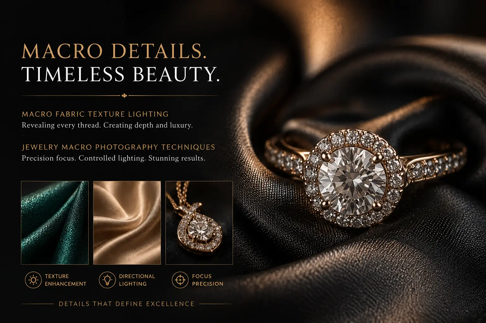
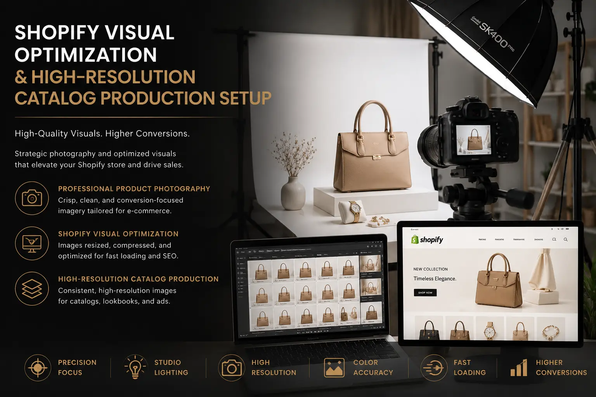

Using Hyper-Detailed Macro Photography to Project Product Luxury Online
Visualizing Touch: The Role of Close-Up Detail in High-End Digital Commerce
In physical luxury retail, the purchase decision is heavily guided by tactile feedback. A customer runs their fingers over the fine grain of a hand-stitched leather bag, feels the weight of a solid gold timepiece, or inspects the intricate weave of an Italian cashmere scarf. These sensory inputs justify the premium price tags and build brand trust. In digital commerce, however, this crucial sensory channel is broken. The online shopper must make their purchase decision entirely based on visual information.
This is where hyper-detailed macro photography steps in as a visual proxy for touch. By capturing the micro-textures of products, brands can restore the sensory connection that e-commerce usually strip away. High-end brands are shifting away from flat, generic imagery and toward **E-commerce Product Photography** that highlights the minute details of material craftsmanship. It is no longer enough to show the product in its entirety; you must show the texture, the stitching, the grain, and the facet structures that prove its luxury status.
Through precise **Macro Fabric Texture Lighting** and **High-Resolution Catalog Production**, brands can elevate their online catalogs from basic listings into digital gallery spaces that evoke desire, communicate quality, and reduce purchasing hesitation.
The Technical Science of Textures: Detailing Textile and Leather Weaves
Different materials require specific macro techniques to reveal their internal quality and structures.
- Raking light for textile textures. Detailing fabric weaves requires side lighting, often called raking light. By setting a hard, focused light source at a very narrow angle (15 to 30 degrees) relative to the fabric plane, you cast tiny shadows behind every thread. This lighting brings out the texture, **showcasing premium garment weave** structures like herringbone, tweed, or linen slubs. Soft, direct lighting from the front removes these shadows, flattening the image and making premium fabrics look cheap.
- Detailing leather and textile textures with micro-diffusers. Leather has a natural texture and shine that can easily reflect harsh hotspots. To capture the deep textures of full-grain leather, professional photographers use custom micro-diffusers. These diffusers soften the highlight roll-off across the leather pores, preventing blown-out highlights while retaining enough contrast to define the depth of the leather grain.
- The white background product photography dilemma. Maintaining high-resolution texture details while producing standard **white background product photography** requires precise exposure control. Overexposing the background causes light to wrap around the edges of the product, creating a hazy halo that washes out fine fiber details. Utilizing specialized black flags to block stray light is essential to maintain crisp edges and texture integrity on pure white backdrops.
- clothing brand lookbook setups with dedicated macro stations. Modern high-end **clothing brand lookbook setups** always include a dedicated macro capture station alongside the main model setup. As the model moves through lifestyle shots, a macro specialist uses specialized lenses and lighting grids to capture the stitch details, fabric density, custom buttons, and lining textures of each garment.
Justify Luxury Pricing
Macro details show the quality of stitching, premium hardware, and rare materials. This level of craftsmanship justifies high price points, converting skeptical browsers into luxury buyers.
Reduce Return Rates
Showcasing realistic textures minimizes the gap between online expectations and physical reality. When customers see the exact texture of leather or fabric, they make informed purchases, dropping returns.
Prevent Counterfeiting
Extremely high-resolution macro imagery captures unique micro-features of authentic craftsmanship. This detailed visual evidence helps customers identify authentic brand assets from cheap copies.
Elevate Platform Authority
Clean, detailed macro product views establish your brand as a premium authority. High-quality details increase dwell time on product detail pages, positively influencing search algorithms.

Precision Macro Focus: Capture Challenges in Jewelry and Fine Goods
Capture distances in macro photography present unique physical and optical challenges that require technical solutions.
- Focus stacking for jewelry macro photography. When shooting extreme close-ups, the depth-of-field becomes extremely narrow—often less than a millimeter. To ensure a diamond ring is sharp from the front diamond claw to the back of the band, photographers use focus stacking. The camera takes 10 to 50 shots while automatically adjusting the focus plane, which are then combined in post-production.
- Controlling reflections on polished metal. Polished gold, platinum, and silver act as mirrors, reflecting the camera, the room, and the photographer. Professional **jewelry macro photography** setups use custom diffusion tents, white paper cones, and polarized lighting filters to shape clean, soft reflections across metal surfaces while retaining contrast.
- Lens diffraction and optimal apertures. Many beginners close their lens aperture to f/22 or f/32 to get more depth-of-field, but this causes lens diffraction, which blurs the entire image. Keeping the aperture between its sweet spot of f/8 and f/11 and using focus stacking is the only way to achieve maximum sharpness and contrast in high-resolution catalogs.
- Eliminating dust and micro-imperfections. At macro levels, a tiny speck of dust looks like a boulder. Before shooting, products must be cleaned using compressed air, anti-static brushes, and microfiber cloths. Even with thorough cleaning, high-end post-production includes meticulous cleaning at the pixel level to remove micro-scratches and dust.
Shopify Visual Optimization: Balancing Detail with Speed
Creating stunning high-resolution assets is only half the battle; you must also optimize them for fast e-commerce performance.
WebP & AVIF Compression
- Convert all high-resolution TIFF or JPEG source files into WebP or AVIF formats.
- Set quality compression levels to 80-85% to significantly reduce file sizes while maintaining micro-textures.
- Strip out unnecessary camera metadata to save additional kilobytes per image.
Responsive Image Coding
-
Implement responsive image templates using
srcsetin your Shopify theme liquid files. - Deliver smaller image sizes to mobile devices while reserving high-res files for desktop monitors.
- Use lazy loading for macro views that sit lower down the product detail page.
Interactive Zoom Implementations
- Avoid using large, uncompressed images for the default page view.
- Load a standard-sized, highly optimized image first, and only load the heavy macro assets when a user interacts with the zoom tool.
- This progressive loading structure speeds up initial page loads while still offering deep detail.
Integrating Macro Assets into the Customer Journey
To maximize **Shopify visual optimization** and conversions, macro images must be placed strategically across your site.
- The material detail card. Don't just bury macro photos in a gallery of 10 images. Create a dedicated section on the product page labeled "Material & Details" that pairs a macro image of the weave or stitching with short copy explaining the source and quality of the raw material.
- Interactive hover reveals. Set up hover transitions on collection grid pages. When a user hovers over a clean, flat product shot, transition smoothly to an extreme macro detail of the texture, showing them the quality of the weave or leather grain before they even click.
- Social-first macro hooks. Use extreme close-ups as visual hooks on social feeds. Open a video ad or carousel with an unidentifiable macro texture, and then zoom out to reveal the product. This curiosity-inducing visual hook stops the scroll and drives traffic to your product pages.

Conclusion
Hyper-detailed macro photography is not just a creative styling choice; it is an essential conversion driver for modern luxury e-commerce. By bridging the digital tactile gap with **E-commerce Product Photography** that highlights the micro-textures of materials, brands can establish authentic value, build trust, and elevate their brand presence.
Through high-end **Macro Fabric Texture Lighting**, detailed focus-stacking for **jewelry macro photography**, and smart **Shopify visual optimization**, you can create a high-resolution, fast-loading digital catalog that communicates luxury.
At The PhD Ads in Madurai, we build premium **High-Resolution Catalog Production** systems, design elegant **clothing brand lookbook setups**, and capture the micro-details of luxury materials to help brands project authentic luxury online.
Key Topics
Project Genuine Luxury Online
Ready to show the world the micro-details of your craftsmanship? At The PhD Ads in Madurai, we produce hyper-detailed macro catalog imagery, design lighting setups for fabric textures, and deliver optimized digital assets that convert.
Email: team@e2o.in